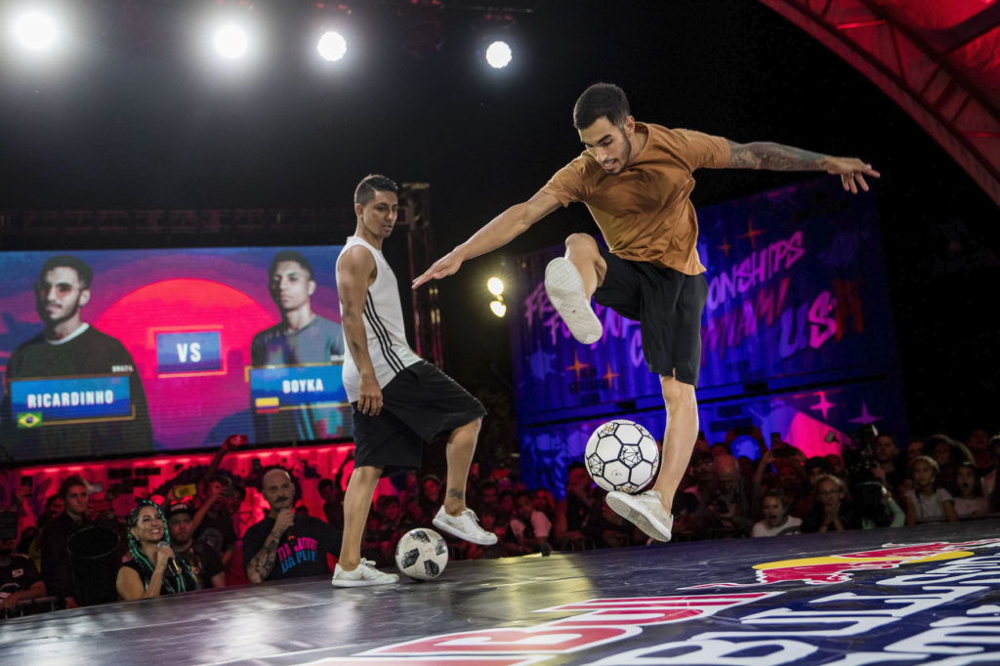

A sportág fennállása alatt már számtalan féle versenyzési mód alakult ki a freestyle
focisták
számára. Ezek között a laikus szemeknek talán mindegyik ugyanolyannak tűnhet, vagy
legalábbis
nagyon hasonlónak. De ez egyáltalán nem igaz. Az egy az egy elleni párbajoktól kezdve az
egyéni
maximum teljesítményen át a leghosszabb kombinációsorozatig mindenre van már versenymód.
A freestyle foci versenyekre bárki kvalifikálhat, ha a kinevezett zsűri által a tudásának
szintje megfelelő hozzá. Ez általában az első körben a Covid óta videós online kvalifikáció
formájában van lebonyolítva, de van, ahol személyesen kell megmutatni a sportolónak, hogy
mit tud.
Az ilyen rendezvények nem csak a sportág képviselőinek, hanem mindenki számára érdekesek
lehetnek. Általában egy minőségi helyszínen vannak lebonyolítva a versenyek, ahol kapható
étel, ital és rengeteg látványos és egyedi mozdulat, amit nem sok helyen láthat az ember.

Battle
A legismertebb és legnagyobb volumenű versenyszám a freestyle focisták körében. Ez egy egy
az egy elleni
küzdelem, ahol mindenki a legjobb trükkjeit kell, hogy megmutassa. Fontos, hogy nem egy,
hanem az összes
alágában a sportnak valamilyen szinten benne kell lennie a show-ban, amit ilyenkor letesz a
freestyler a
színpadra. A battle során mindkét versenyzőnek három fél perces köre van, amiben szabadon
szárnyalhat a fantáziája és megmutathatja miért érdemes a győzelemre. Legtöbbször azok érnek
el sikereket ebben a versenyszámban, akik a legtöbb féle ágát mutatják meg a sportnak,
lower-t, upper-t, sitting-et és akrobatikus elemeket is tartalmaz ez a három kör. A legtöbb
battle világbajnoksággal a norvég Erlend Fagerli rendelkezik, aki többször elmondta, hogy
ebben a sportban a leglényegesebb és legszebb a változatosság. Az, hogy használja a sportoló
a kreativitását, mindig akarjon újat mutatni és a saját határait feszegesse. Így Erlend
szerint, kitartó munkával el lehet érni a csúcsra. Ugyanakkor a battle (és nem mellesleg az
összes többi freestyle football versenyszám) zsűrizése és értékelése egy nagyon nehéz és
szubjektív dolog. Ennek egyik oka az, hogy nagyon nehéz, sőt lehetetlen összehasonlítani egy
akrobatikus mozdulatot egy nehéz lower trükkel. Ettől függetlenül ez a legnépszerűbb ága a
sportnak, a nagy világversenyek TOP16 és TOP8 battle-jeit sok laikus is nézi, akár élőben,
nem csak a freestyle foci közösség tagjai.
Az ironman az egyik legnehezebb ágazata a freestyle versenyeknek. Legalábbis a
legmegterhelőbb állóképességben. Ennek a versenymódnak az a lényege, hogy a versenyzőknek
minél tovább kell lower trükkököket csinálniuk és maximum 4 vagy 5 (aktuális versenytől
függően) ugyanolyan trükk lehet egymás után. Az első trükktől addig mérik az időt, ameddig
leesik a labda. Ez a komolyabb világversenyeken nem kap sok figyelmet kap, mivell ez inkább
a freestylereknek egy presztízs dolog, ha jó helyen végeznek, ebben a versenyszámban. Fontos
megjegyezni, hogy csak egyes (szimpla) kerüléseket szabad végezni, nem lehet benne csak
basic kombinációkkal versenybe szállni. Ez annyit jelent, hogy a világkör (atw), a
világugrás (htw) és ezeknek reverse, azaz másik irányba elvégzett variációi megengedettek.
A challenge az egyik legnagyobb volumenű versenyesemény a battle után. Ebben az esetben
annyi a különbség, hogy van egy fix követelményrendszer (nehézségi szintben), hogy milyen
lower trükköket kell teljesíteni a különböző körökben. Az első szinten még nagyon egyszerű
trükköket kell megcsinálni és ahogy halad a verseny, egyre magasabb szinteken, egyre
nehezebb trükköket kell megcsinálni a versenyzőknek.A challenge-ken szintén vannak bírái,
akik elfogadják az
adott szinten megcsinált trükkjét az adott versenyzőnek. Mivel az is egy fontos paraméter,
hogy ugyan vannak előírt trükkök, de nem kötelező ezeket csinálni, ezek csupán a nehézségi
szint megadására vannak, lényegében ajánlások. A legmagasabb szinteken már hármas
kerüléseket is kell csinálni, esetleg három és feles kerüléseket. Vagy a freestyle egyik
másik olyan módját, amit rengeteg gyakorlással tud csak elérni az ember, ezek a no touck-ok.
A no touck-ok abból állnak, hogy feles trükköket (fél, másfél, két és fél vagy három és fél)
csinál egymás után a freestyler. Viszont az az igazán nehéz benne, hogy két ilyen trükk
között nincs érintés, azaz egyikből a másikba kell "repülni", ezért nevezik a szakmai
berkeken belül repülőknek a no touch-okat. Ugyan a külső szemlélőnek ez lehet a
legunalmasabb versenyszám, hiszen rendkívül időt töltenek a versenyzők a színpadon, ez is
egy egészen látványos. Igazán akkor válik érdekessé, ha az ember tudja már, hogy mit lát
amikor egy ilyen versenyt néz.
A best trick neve nem hazudik, ez a versenyszáám arról szól, hogy a versenyzőnek a
legnehezebb trükkjét kell bemutatnia a zsűrinek. Általában két részre van bontva ez a
versenyszám, mivel nem nagyon lehet összehasonlítani nehézségi szintben egy nehéz lower
trükköt egy nehéz akrobatikus trükkel. Szóval a két kisebb ág a kreatív és a hardcore ág. A
hardcore a lower trükköket jelenti ebben az esetben, a kreatív perdig valamilyen akrobatikus
vagy tényleg kreatív nem lower trükköt, amit még nem látott a világ. Mindkét esetben érdemes
nyomon követni ezt a versenyszámot, ugyanis ebben szoktak a legváratlanabb és legjobb
trükkök, hiszen itt nincsen semmilyen időbeli követelés, maximum annyi, hogy hény próbája
van a freestylernek. Itt nincs olyan követelmény, hogy milyen stílusban kell csinálni a
trükköt és nem kell utána teljesíteni még, mint például egy battle-ben. Ugyanakkor mivel
emiatt általában erre lenne a legtöbb jelentkező a nagy világversenyeken ezt a műfajt
hanyagolják, nagyon sok időt emésztene fel és nincs erre kapacitása se időben, se pénzben a
WFFA-nak (World Freestyle Football Assosiation).
Egyéb versenyek
Még sok egyéb versenyzési mód van, de ezek a legfontosabbak és legtöbbet ezzel találkozhat
az ember, ha freestyle versennyel kerül szembe. A többi nem érdemes komolyabban említésre,
persze az ott versenyző freestylerek nem kevésbé elismertek a közösségen belül, mint a fent
említett versenyágakban teljesítő sportolók. Nem az ő érdemeiket csorbítja az, hogy nem
kapnak itt említést.